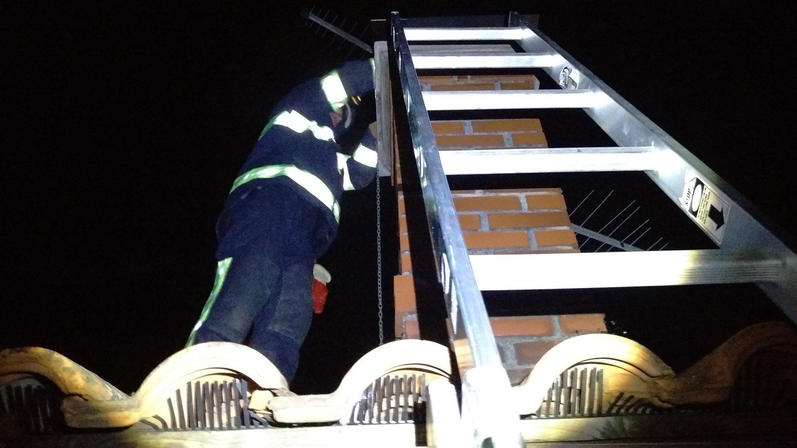

Gasilci so na lokaciji brez posledic pogasili dimniški požar.
Posredovali gasilci PGD Jelšane, kateri so nudili pomoč ekipi NMP Ilirska Bistrica, pri oživljanju potnika na avtobusu.
Člana NUS Notranjske in Ljubljanske regije sta nemško tromblonsko mino kalibra 45 mm zaradi nevarnosti eksplozije pri premikanju uničila na kraju samem. V intervenciji so sodelovali tudi člani PGD Jelšane, ki so zagotavljali požarno varovanje in varovanje okolice.